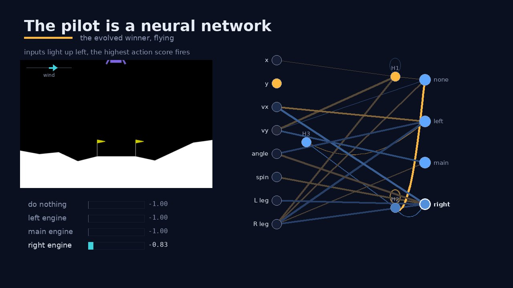
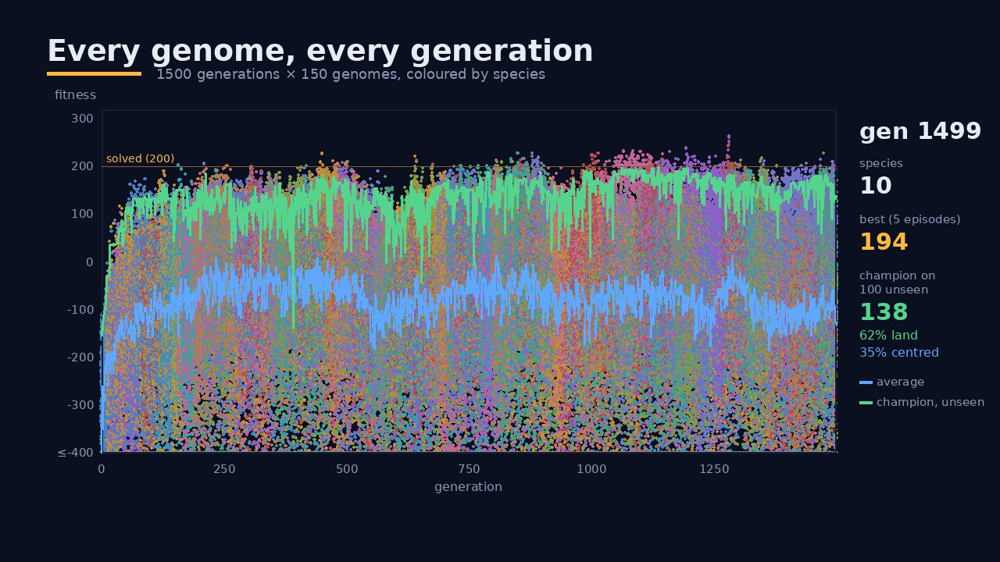
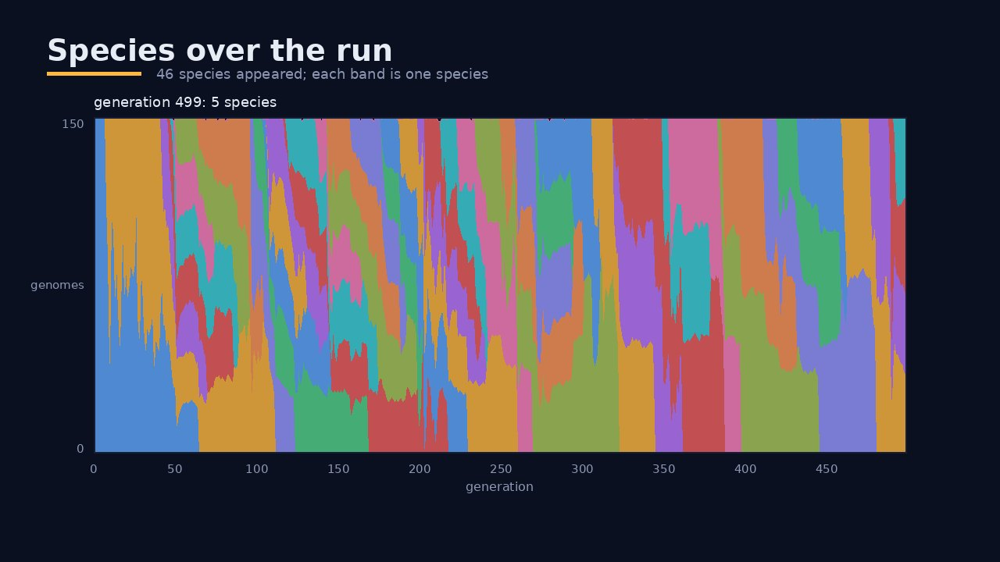
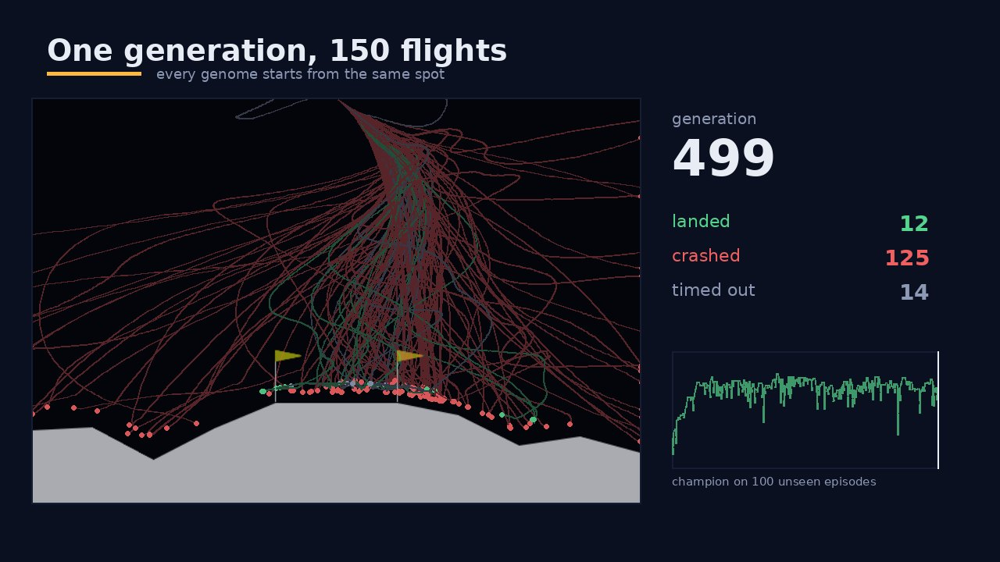
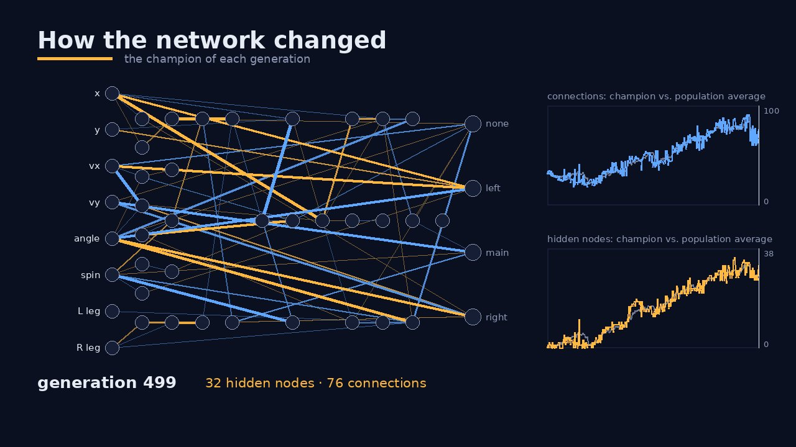
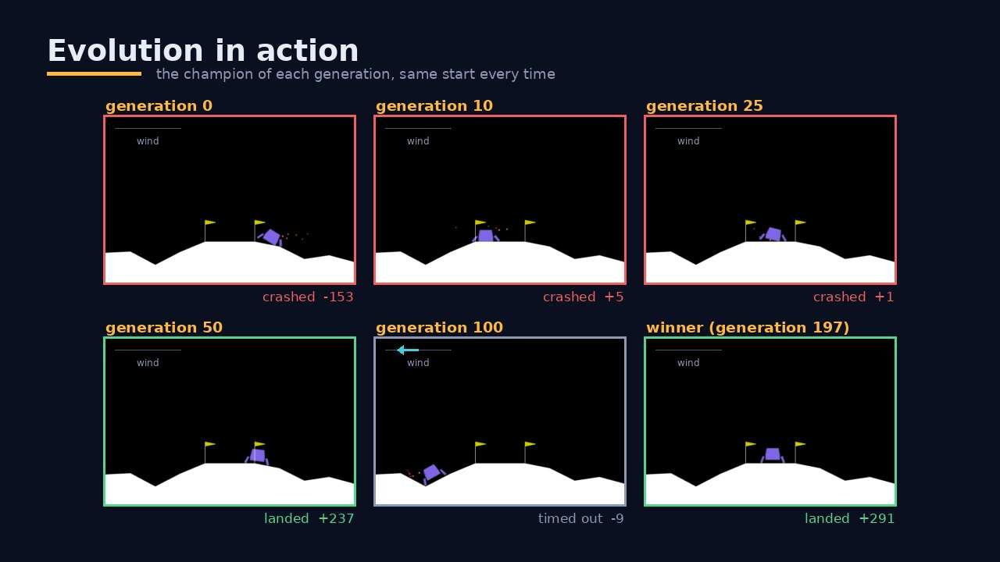
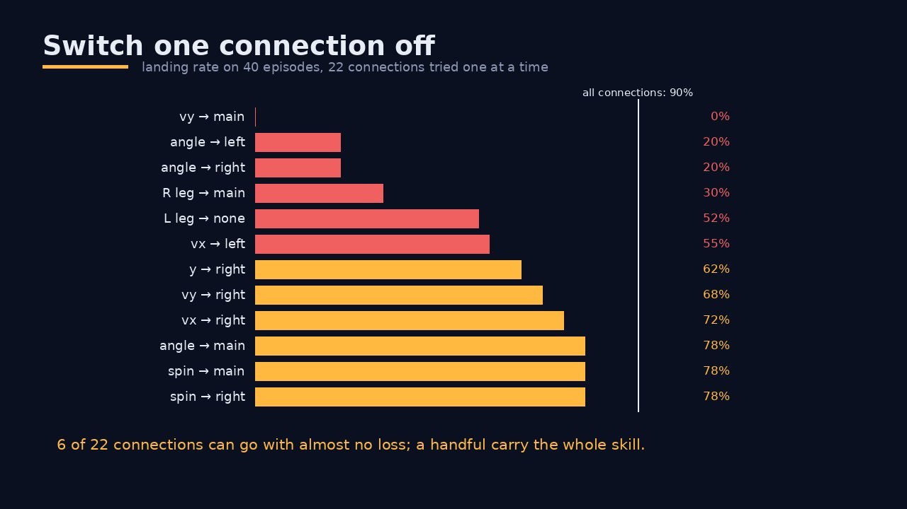
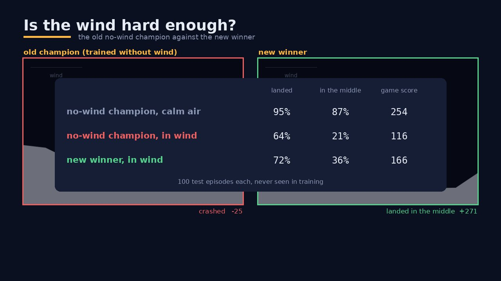

Evolving a network's weights and shape, in wind
NEAT (NeuroEvolution of Augmenting Topologies) starts from the simplest possible network and lets evolution add hidden nodes and connections only where they help. Here it learns to land Gymnasium's LunarLander with wind switched on. It uses no gradients and no backpropagation, just a population that improves every generation.
Narrated explainer (captions in the player menu). Every frame was rendered from this repository's code and its training run. This is the wind version of NEAT Lunar Lander, which landed in calm air with no hidden nodes.
1The problem
The lander starts high above the surface with a random push. It has to touch down softly between the two flags. Gravity pulls it down, and every engine burn costs fuel. Here, gusts of wind (up to 15) push it sideways and turbulence (up to 1.5) twists it. The wind is not one of the inputs: the network can only notice it as drift. On top of the game's score, a landing earns a bonus of up to +50, the full bonus exactly in the middle and none at a flag.
| The network gets 8 inputs… | …and scores 4 actions |
|---|---|
| x, y position · horizontal & vertical velocity · angle · angular velocity · left / right leg contact | 0 do nothing · 1 fire left engine · 2 fire main engine · 3 fire right engine. The highest score fires. |

The pilot is a neural network. Inputs on the left, actions on the right. Orange connections are positive and blue ones are negative; thicker means a larger weight. As the lander flies, the nodes light up with their values and the highest action score fires.
Nobody designed this network. It has one hidden node and 26 connections, and evolution found every one of them.
2A genome is a recipe for a network

Evolution works on a genome: a list of node genes (which neurons exist) and connection genes (from, to, weight, enabled). Reading the list builds the network.
Every connection gene carries an innovation number, a historical marker given out
the first time that connection appears in the population. Genes with the same number in two genomes
share an origin. neat-python names each gene by its (from, to) pair, which does the
same job.
3Mutation grows the structure

- Change a weight: the most common mutation (rate 0.8 per weight).
- Add a connection: join two unconnected nodes (probability 0.5 per child).
- Add a node: split a connection (probability 0.2). The old gene is switched off, the new incoming connection gets weight 1 and the outgoing one keeps the old weight, so behaviour barely changes.
Connections and nodes can also be deleted, so a network can shrink when parts of it aren't needed.
4Crossover: genes line up by history

Line two parents' genes up by innovation number. Matching genes are in both. Disjoint genes fill a gap in the other parent. Excess genes come after the other parent's last gene.
The child takes matching genes from either parent at random, and disjoint and excess genes from the fitter parent. However different the two networks look, the child is always a valid network.
5Speciation protects new ideas

A new node usually makes a network worse until its weights are tuned. Ranked against everyone, it would be thrown away too soon. So NEAT groups similar genomes into species and lets them compete mainly inside their own species.
δ = (c₁·D + c₂·Σ|Δw|) / N # c₁ = 1.0, c₂ = 0.5 same species if δ < 2.2
D counts the genes that don't match, Σ|Δw| adds up the weight differences of the matching ones, and N is the size of the larger genome. neat-python works this out for connection genes and for node genes (biases) and adds the two. The 2002 paper uses the average weight difference instead; the idea is the same. Each species shares its offspring among its members. A species that doesn't improve for 20 generations dies out.
6One generation
seed_wind does.) Because 5 episodes are noisy, each generation's champion
also flies 100 episodes no genome ever trained on. "Solved" means a game score of at least 200
there, without the bonus.7The run, generation by generation
500 generations × 150 genomes. Every genome of every generation is logged
(data/population.csv.gz), along with whole populations every 10 generations, so the run can be replayed.

Every genome, every generation. Each dot is one genome, coloured by species. The green line is each generation's champion on 100 unseen episodes. It climbs to 150 by generation 42, then stalls. The best champion came from generation 81 (score 182, 77% landings) and the other 400 generations never beat it. In wind, the task was not solved.

Species over time. The classic NEAT plot: each band is a species and its height is its share of the population. 46 species appeared over the run. They split off, grew when they did well, and died out when they stagnated.

150 flights, one start. All genomes of a generation fly the same scenario, drawn as trails coloured by how they ended. Early on almost all of them crash. Later many land, but the wind keeps the trails spread out: every gust needs a slightly different answer.

How the network changed. It starts fully connected: 32 connections, no hidden nodes. The winner (generation 81) has one hidden node and 26 connections. After that the population kept growing, to 30+ hidden nodes and 80 connections, and those networks did worse on unseen episodes. Did the wind make hidden nodes necessary? No: see below.

Champions over time. The same start, flown by the champions of different generations. Early champions crash or drift away; later ones slow down, straighten up and land.
8Reading the evolved network

Switch off one connection at a time and fly 40 unseen episodes (60% land with all of them). 19 of the 26 connections can go with almost no loss, and a few carry the whole skill:
vy → main(−12.0): falling fast drives the main engine: the brake. Without it: 0% landings.angle → left(−11.1): tilt drives the left engine: stays upright. Without it: 15% landings.L leg → right(−3.9): a leg down holds back the right engine. Without it: 32% landings.

Is the wind hard enough? The calm-air champion lands 95% (score 254) without wind but only 64% (116) in it. The new winner, trained in wind, lands 72% (166) and lands in the middle 36% of the time, against 21%. The wind is clearly hard: too hard to solve in 500 generations. It still didn't force a hidden layer.
9Why it fails
To find out why 500 generations didn't solve the windy task, the winner flew 1,000 more windy flights
it had never seen, and seven whole populations from the run were re-flown on 100 episodes per genome.
Four findings stand out. The full report, with the method and every number, is in
results/failure_analysis/run_wind_20261020/.
- A steady push kills it; gusts don't. When the wind keeps coming from one side for most of the flight, the lander fails every time. Gusts that come and go are survivable.
- More generations would not have helped. The best genome in the population peaked around generation 80, and after that the population got worse.
- NEAT picked lucky genomes, not good ones. Five windy flights rank the population well overall, but at the very top luck decides. Better genomes sat in the population unnoticed.
- The task is hard for any controller that reacts only to the moment. Gymnasium's own hand-written controller does even worse in this wind than our evolved one.
A steady push from one side is what makes it fail
Share of the 1,000 test flights that crashed or timed out, grouped by the average wind over the whole flight. Hover a bar for the numbers.
The population peaked early, then lost its best genomes
The gap between the dashed line and the green line is luck: the champion's 5-episode training score versus what it really does. The blue squares show the best genome that was actually in the population, found by re-flying every genome on 100 episodes. Hover for values.
NEAT's pick against the best genome it had
For each re-flown generation: what NEAT's top genome scored on its 5 training episodes (diamond), what the same genome really scores on 100 episodes (circle), and the best genome in that population (square). The pick is always flattered by luck, and from generation 80 on a clearly better genome was available.
A hand-written controller struggles too
Average game score and landing rate. Gymnasium's built-in heuristic reacts only to the current state, like our network. It is good in calm air and falls apart in the same wind.
10Memory: what the network can't do yet
Finding 1 has a simple cause. Every network so far is feed-forward: each step, the 8 numbers flow from the inputs to the outputs and that's it. Nothing is kept for the next step. The network is a pure reflex: the same 8 numbers always give the same action.
Why a reflex can't hold off a steady push
Picture the lander hovering perfectly still above the middle of the pad. Now picture it hovering perfectly still while a steady wind pushes it to the left, and it fires its right engine just enough to cancel the push. To the network, these two moments look exactly the same: the same position, zero speed, no tilt, legs up. The wind is not one of its inputs. But the two moments need opposite answers. In calm air it should do nothing, and in the wind it must keep firing.
A reflex has to give one answer to one set of inputs, so it can't do both. In practice it waits until it sees itself drifting, pushes back, sees the drift stop, stops pushing, and drifts again. That saw-tooth is survivable in short gusts. Against a push that lasts the whole flight, it keeps losing ground, and near the ground there is no room left to recover.
Engineers know this problem from control theory. A controller that reacts only to the current error (a "P" controller) always settles a little off target under a constant load: the steady-state error. The classic fix is the "I" in a PID controller, an integral term. It adds up the error over time, so a push that won't go away builds up a counter-push that stays on. Cruise control on a long hill works the same way. Adding up over time needs one thing a reflex doesn't have: memory.
What memory looks like in a network
A recurrent network is allowed to have loops: a connection may run back to a node that was already computed, or from a node to itself. With neat-python's recurrent network, every connection carries the value its source node had at the previous step. Only the 8 inputs are fresh. Two small circuits show what loops can do.
A running total (the integrator). Hidden node h gets the drift
vx with a small weight, plus its own previous value through a loop with a weight close to 1:
h(now) = tanh( 1.0 · h(before) + 0.1 · vx(now) )
Every step adds a little drift to what was already there. If the wind keeps pushing left, h
keeps growing and keeps the right engine on, even at the moments the lander isn't moving at all. That's
the "I" of a PID controller, grown by evolution. Because of tanh it can't grow forever;
it saturates at ±1.
A change detector. No loop is needed for this one. Because a hidden node passes on the
value from one step earlier, node d holds vx from 1/50 of a second ago. Wire the
output to the fresh vx with +w and to d with −w, and it computes
w · ( vx(now) − vx(before) )
That is how fast the drift is changing: an acceleration. With the engines quiet, that acceleration is the wind. So the network can "feel" the wind it was never told about, one step after it starts.
What changes in run C
feed_forward = Falseinneat-config-c.ini. Add-connection mutations may now create loops, including a node to itself, andmake_netbuilds neat-python'sRecurrentNetworkinstead of the feed-forward one.- Every network starts with 36 connections instead of 32. neat-python also gives each of the 4 outputs a loop to itself, so even generation 0 has a sliver of memory: each action score can lean on what it was one step ago.
- Memory is wiped at the start of every flight (
net.reset()), so one flight can't leak into the next and a seed still means exactly the same flight. - Everything else is the same as run B, so comparing B and C isolates the effect of memory.
How we'll know whether memory helped
- Paired comparison. The winners of A, B and C fly the same 1,000 unseen windy flights. The difference in score and landing rate gets a bootstrap confidence interval, so a lucky draw can't decide it.
- The steady-wind chart above. If memory is the missing piece, C's failure rate should drop most in the "strong, steady wind" bars, where a reflex fails every time.
- Switch the memory off. Disable every loop in C's winner and fly it again. If the score drops, the network really uses what it remembers. This is the same test that showed run A's hidden node was not needed.
Memory isn't free. Weights that act across time are harder for evolution to tune, a loop with too much gain makes the lander oscillate, and loops are harder to draw and read. If C still fails, that's useful too: it would mean the search, not the network, is the bottleneck, and run B will tell us how far fixing the search alone gets.
11Run it yourself
# setup git clone https://github.com/JCA374/lunarlander-neat-wind && cd lunarlander-neat-wind python3 -m venv .venv && source .venv/bin/activate pip install swig && pip install -r requirements.txt # evolve (about 1.5 h for 500 generations on 8 cores; every log is written as it goes) python train.py --generations 500 # watch it, test it, plot it python demo.py runs/<run> python evaluate.py runs/<run> python visualize_all.py runs/<run> # regenerate this page's videos from your own run (narration: see README) python video_tools/make_explainer.py runs/<run>